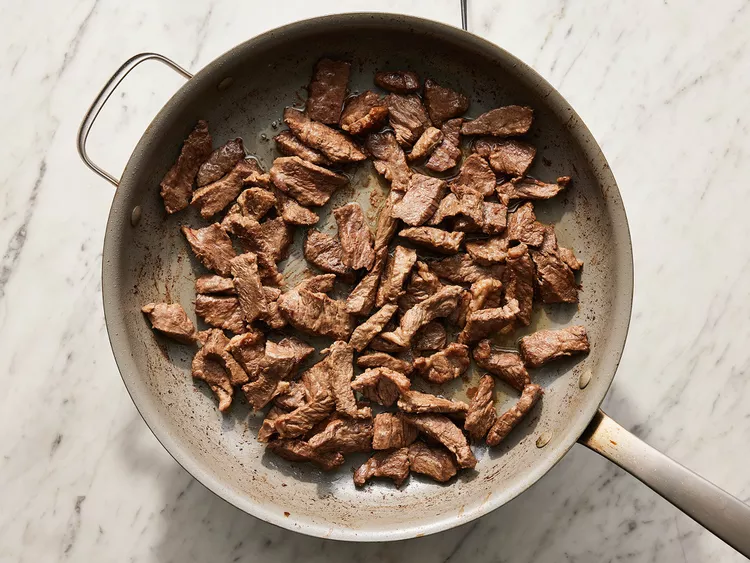
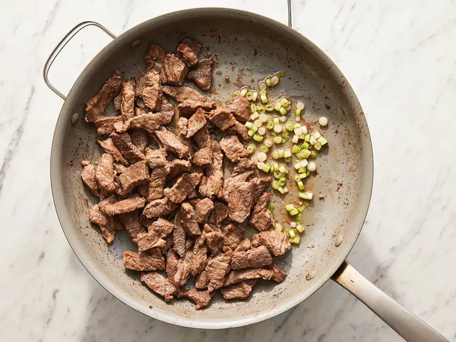
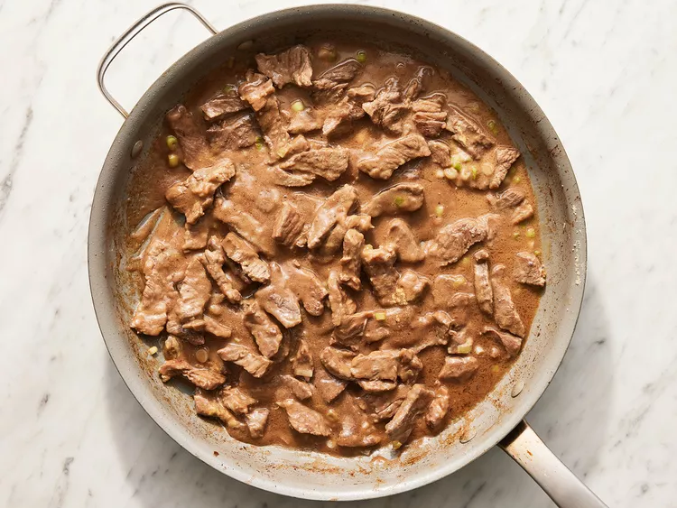
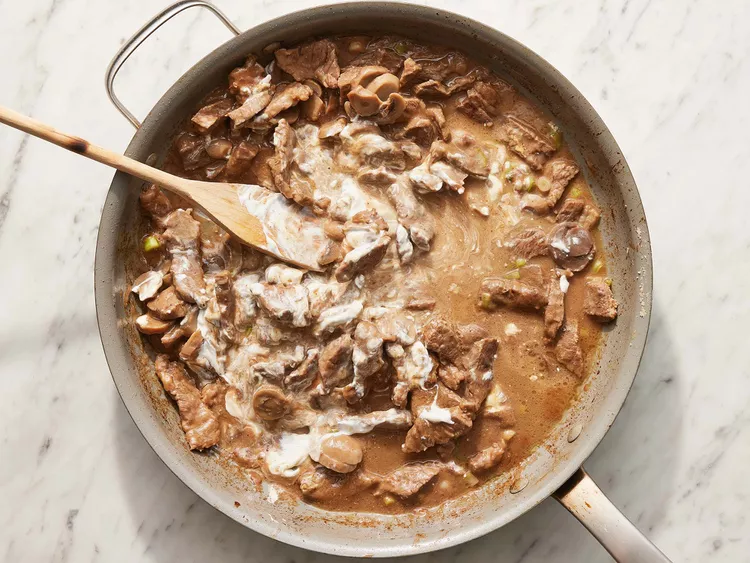
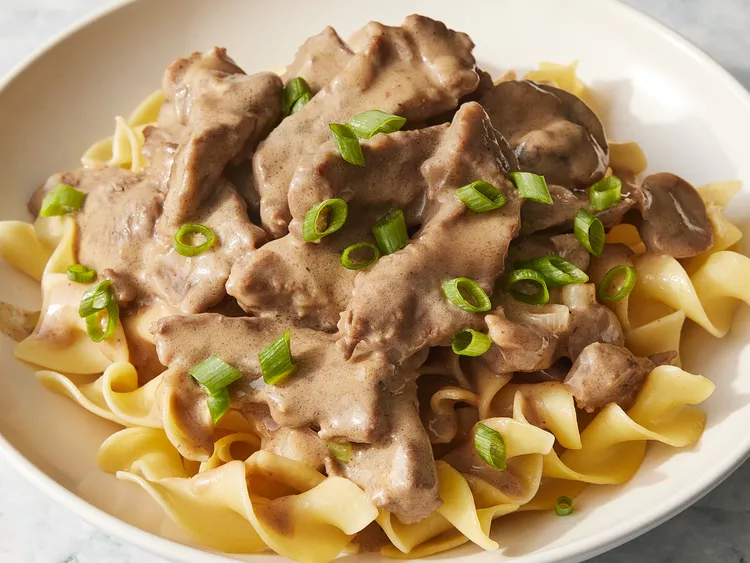

This beef stroganoff is made with beef chuck roast, beef broth, white wine, mushrooms, and sour cream. It is the best I've ever had and well worth the effort. I have been making this recipe for over 20 years! Serve over rice or noodles.
Remove any fat and gristle from chuck roast; cut into strips 1/2-inch thick by 2-inches long. Season with 1/2 teaspoon salt and 1/2 teaspoon pepper.
Melt butter in a large skillet over medium heat. Add beef and brown quickly.
Push beef to one side of the skillet. Add onions; cook and stir for 3 to 5 minutes, then push to the side with beef.
Stir flour into juices on the empty side of the pan. Pour in beef broth and bring to a boil, stirring constantly. Lower the heat and stir in mustard. Cover and simmer for 1 hour or until the beef is tender.
Five minutes before serving, stir in mushrooms, sour cream, and white wine. Cook until heated through; season with salt and pepper.
Enjoy served over hot cooked noodles.
